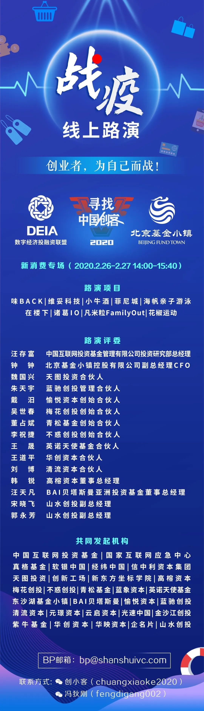

一个人干两个人的活，物流企业抗疫复工
原文链接 备份链接 人员返岗难、道路不畅通、现金流紧绷，中小物流企业需要更多的支持和帮助，这不仅事关物流业全面复工复产，也关系到民生和社会稳定 文 |《财经》记者 王静仪 编辑 | 施智梁 快递员王为这几天已经忙昏了头，他所在的上海市浦 …

燃财经（ID:rancaijing）原创
作者 | 黎明
编辑 | 阿伦
疫情对物流行业造成了巨大影响，货拉拉创始人兼CEO周胜馥称，疫情期间货拉拉的订单量下降了约80%，今年2月份的亏损金额高达1个亿，但他同时表示，“我们不会裁员，不会降薪。”
2月25日，燃财经举办线上沙龙，货拉拉创始人兼CEO周胜馥、光源资本创始人兼CEO郑烜乐、阿里本地生活副总裁、蜂鸟即配业务负责人刘歆杨，分别进行了主题分享，并和燃财经总编辑贺树龙做了对话。

•受疫情影响，货拉拉的订单量目前大概恢复了20%，今年2月份亏损1个亿，为史上最高，但货拉拉目前资金充足，而且不会裁员和降薪；
•不允许公司只有三个月的现金，确保公司有造血能力，按超过一年的时间去准备充足的资金；
•物流是把货物从A点运到B点的效率游戏，效率来自于人车货的信息化、在线化、智能化，谁能把物流的这三个关键要素做好，谁就会有优势；
•企业的利润来自对社会创造价值的回收。较少关注竞争对手，优先关注用户需求。货拉拉的使命愿景和价值观不会变化；
•过于追逐短期利益会对企业造成不利影响，货拉拉坚持长期主义，目前没有IPO计划，且希望十年之内不上市。
以下是周胜馥在燃财经沙龙上的详细分享内容：
疫情对货拉拉短期影响巨大，但长期一定会恢复
可能很多人不知道，货拉拉是在香港创立的。之前我去内地的一些城市，很多新朋友都以为货拉拉是本地企业。不仅在国内，有一次在菲律宾，当地人也以为我们是菲律宾的企业，这是一个挺有趣的现象。货拉拉是做货运的，一开始做同城货运，现在除了同城货运还有跨城货运，另外我们也有做搬家、零担、企业版，其实汽车销售也有。
现在我们在国内覆盖了大概300座城市，海外覆盖了20来个城市，从东南亚到印度，包括美洲，都有货拉拉的业务。今年我们的目标还是会投不少精力在国际化上面。
疫情对物流的影响是巨大的，现在我们业务恢复了不到20%。而且什么时候能恢复到正常水平现在也难以判断。短期来看，疫情对我们的影响是巨大的，但中长期来看，我觉得只要中国经济恢复了，我们的业务肯定也能恢复。
在具体影响上，货拉拉是一个连接供需两边的平台，疫情对供给端的影响是最大的，因为有交通管制，以及很多司机无法复工，现在我们的供给端恢复了大约20%。在用户端，无论是C端的搬家需求，还是B端的运力需求，我们都能看到需求下降了很多。因为无论是中小企业还是大型企业，受制于无法复工，没有生产就肯定没有运力需求。
这当然也会影响到我们的同事。货拉拉是一个O2O平台，除了线上的运作，我们有很多事情还要通过线下的运营去完成，所以员工能否如期到岗对我们的企业恢复也很重要。在给员工安全、安心的复工，以及对员工的安全教育方面，我们也做了不少工作。
我们算是一个比较居安思危的企业，在好景的时候，在阳光比较灿烂的时候，我们已经完成了几轮融资，所以在资金方面我们是没有困难的。这几年大部分企业都可能面临裁员和降薪的压力，但我们既不会裁员，也不会降薪。
我们是这样看物流行业的。物流其实就是把货物从A点运到B点的效率游戏，谁能把效率做好，就谁有机会。效率来自于货物的信息化。其实在整个物流里，重要角色就是司机、车、货物。所以我们从人车货的角度能做到的就是“三化”——信息化、在线化、智能化，谁能把物流的这三个关键要素做好，谁就会有优势。
从用户的角度，比如有时候你在打车的时候会考虑一个问题，就是我的货物究竟是需要一个小面，还是需要一个中面。我们希望能通过一些AR和深度识别的技术，让用户只用拍个照，然后我们就会告诉他这个货物用多大的车去装就可以了。所以在信息化方面，我们是希望持续投入的。
还有一些场景，比如在高峰时间段，车的运力是不够的，那这个时候我们可以通过一些运筹优化的技术，把一些相似的订单做成拼货。
另外，在车的信息化方面，严格来说现在我们只知道司机是在线的，但车辆还没有做信息化，所以接下来我们也希望通过一些IoT的设备，把整个物流的链路做到信息化和在线化。
从宏观来看，中国的物流成本占GDP的13%-14%左右，但在一个比较发达的国家，物流成本可以通过效率的提升降到10%以下。所以我们中长期还是很看好物流效率提升的空间。当然短期的压力还是挺大的，比如说，这个月我们就还是亏钱的，而且亏损金额也是我们公司历史上最高的。
对话周胜馥：
***不允许公司只有三个月的现金***
燃财经：此前有报道称，货拉拉的业务量在春节和疫情期间下降了93%，最近有所恢复吗？你预计什么时间能恢复到正常水平？
周胜馥：我们到昨天大概恢复了20%左右，所以大概就是下降了80%。具体什么时候恢复其实还是要看中国的经济什么时候恢复，因为我们的业务无论是从C端需求，还是B端中小企业或大企业的需求，都是跟中国经济挂钩的，而且我们覆盖的范围和行业也比较多，所以最大的变量还是中国的经济。
燃财经：货拉拉这个月的亏损是历史上最多的，具体多少？
周胜馥：一个亿。不过我们不会裁员，不会降薪。
燃财经：一个亿不少了，具体的亏损来自哪些方面，成本结构大概是怎样的？
周胜馥：具体的成本结构我就不说了，因为二月份我们业务总体下跌了90%以上，所以收入最后肯定也下跌得比较厉害，但是像员工和房租这类的支出并不会降下来。另外我们还是中长期看好，一些扩张的业务没有停下来。所以就导致二月份的亏损也不少。
燃财经：刚才你说，货拉拉账上的现金储备比较多，所以短期内没有现金流压力。那货拉拉有没有做一些开源节流的工作？如果账上的现金只够用3个月，你会做什么？
周胜馥：疫情发生之前，我们的看法是，应该用的钱就用，不应该用的钱就不用。疫情发生后，我们觉得疫情总要过去，所以我们现在更多是在为疫情过去之后要做的事情做准备。比如今年我们要在国际化方面更加激进，国内也会落地更多城市，我们在做人才储备，所以就不可能在节流上做很多事情。其实短期内我们会有很多额外开支，比如运力有问题，我们需要对司机侧多做一些活动，会在短期内加大开支。
我们的投资方光源资本帮我们融了好几期资金，所以我们才能在比较困难的时候，去做一些更长远的准备。如果我只有三个月的现金，那就比较困难了。其实我们曾经出现过只有一个月资金的时候。但那次最后还是比较幸运，在最后一刻融到了钱。所以自从那次以后，我就确保两个事情，一是我们自己有造血能力，至少在现金流上需要很健康；二是我们要永远有足够的资金，不仅是三个月，而是要按超过一年去计算，我是不允许公司只有三个月的现金的。
燃财经：上面说到账上只有1个月现金大概是什么时候？当时内心是什么感受？
周胜馥：这个还好，我觉得我在面对风浪或者危机的时候，知道哪些是自己可以控制的，哪些是自己不能控制的。比如这次疫情，我觉得不能控制的因素就是，我不知道疫情什么时候结束，疫情具体对中国经济产生多大影响。另外，能不能拿到投资我是控制不了的。我能控制的是，尽力去见更多人，找到相信货拉拉的人。至于那些不能控制的，我就不用担心了，可以控制的就尽心尽力去做好。
***物流行业的痛点和机遇***
***人车货的信息化、在线化和智能化***
燃财经：货拉拉在疫情期间做了很多有意义的工作，在这些事情上花费了多少精力和资源？动力是什么？
周胜馥：我们在1月26日就开通了绿色通道，做一些公益性质的运输，也是为武汉做一点贡献。我们在武汉召集了近100个爱心志愿司机，他们承担了超过200次的公益运输，运输一些口罩和医疗用品。其实不仅在武汉，武汉周边省份也有这方面的需求。比如建立火神山医院的时候，我们有一些司机是从成都将物资运到火神山。没有货拉拉司机，其实就没有货拉拉，因为他们始终是最终的运力提供者。
燃财经：疫情期间，以顺丰、京东到家、盒马、每日优鲜、饿了么、美团为代表的企业，物流配送环节自营可控，收获了很好的用户口碑，但是一些平台型电商网站和物流快递企业表现十分乏力，你认为，原因是什么？带给大家的启示是什么？
周胜馥：自营和平台模式，我觉得各有优劣。自营的控制力和稳定性要强一些，有些特殊场景会突出这个模式的优点。平台型企业的灵活性要强一些。所以我觉得是各有优劣，在不同的场景会突出不同模式的优点和缺点。
燃财经：在你看来，物流货运行业还有什么痛点没解决？这里面藏着哪些创新的机会？
周胜馥：物流行业很大，具体痛点要看细分领域。不同距离代表着不同市场，比如同城三公里还是同城二十公里的配送，支线、干线还是国际配送。不同时效也是不同市场，即时、当日达、次日达，以及计划性需求。运输的规则也是不同需求，整车和拼车都是不一样的。
无论从距离还是时效来看，都可以将物流行业分割出不同的市场。但是整个物流行业的痛点，我觉得还是司机、车、货物的信息化、在线化、智能化的整个改善的过程。所以能在这三个要素里面去做改善的，就是物流行业的机会。
燃财经：疫情期间，无接触的概念比较火，你认为这会加速物流行业与人工智能的结合吗？货拉拉在这方面有哪些尝试？
周胜馥：是的，我们的人工智能应用也是围绕着人车货的信息化、在线化、智能化去做的。比如，这一堆货，我们究竟是应该用小面还是中面去运输，如果我们能通过手机拍照，通过一些算法测出货物的体积，能不能实时知道车里面还有多少载重空间，这其实已经在运用很多人工智能的算法了。
*****坚持长期主义*****
*****希望十年内不上市*****
燃财经：当前阶段，货运物流平台之间竞争的焦点是什么？和快狗速运、蓝犀牛等对手相比，货拉拉有什么优劣势？
周胜馥：我们从以前到现在，都是比较少关注竞争对手的，因为我们觉得，我们存在的理由是我们的客户，所以我们的用户关注的东西，就是我们要优先关注的。至于我们的对手在做什么，其实我们关注的比较少。
燃财经：对你个人而言，疫情带来了哪些认知上的变化？
周胜馥：我最深刻的体会就是，贝索斯有一句话，“究竟什么东西是十年不变”。世界肯定会有很多变化，有时候是好的，有时候不好的，比如说像这次疫情，但是我觉得更重要的是反问自己，做这个企业有哪些东西是不变的？我觉得这是这次疫情对我最大的认知变化。
燃财经：做企业哪些东西是不变的？你自己的答案是什么？
周胜馥：我认为企业的利润来自对社会创造价值的回收。经常反问一下自己，究竟为世界创造了什么价值？我们对用户、司机、员工的价值是不变的。对用户来说，货拉拉最大的价值就是“有快好”，有就是能找到车，快就是能快速找到车，而且从叫到车到门口的时间可以做到十分钟以内，好就是通过司机提供很好的物流服务。货拉拉对司机的价值就是有钱有面有自由，对员工的价值就是有成长有未来有舞台。然后每个做得好的企业也会有一些比较一致的使命愿景价值观，这是整个公司的人都认可的，所以我觉得货拉拉的使命愿景价值观也是不变的。
燃财经：创立货拉拉之前，你做过咨询，带领货拉拉发展的心路历程与之前的经历有哪些相通之处？又有哪些新的收获和感悟？
周胜馥：就能力来说，我觉得我之前的经历跟我现在做的企业是没有什么相同之处的。我最大的收获是，那一段时间磨练的一些价值观，比如激情、谦卑、坚毅、执行，其实都是那个时候培养出来的。
燃财经：有人提到行业烧钱和刷单的问题，货拉拉现在的补贴还像以前一样高吗？如何防止司机刷单？
周胜馥：其实我们的补贴是比较少的，国内刷单问题不大，我们的部分海外业务有刷单问题。当然我们有一个技术团队是负责做风控的，所以刷单这个问题其实是可以通过技术手段去解决的。
燃财经：货拉拉的盈利状况如何？什么时候能够整体盈利？长远来看，商业化的主要方式有哪些？
周胜馥：盈利状况我还是不说了，因为现在的预估也是毛估，所以我还是保守一点，什么时候盈利我就什么时候给大家汇报。在商业模式变现方面，目前我们还是主要靠司机的会员费作为商业化的手段。
燃财经：货拉拉有IPO计划吗？
周胜馥：说实话，我们是没有IPO计划的。我经常跟我们同事和投资者说，我们是希望十年以内不要IPO的。因为一个企业或者一个人是不是长期主义，我觉得这个很重要。过于追逐短期利益其实会影响企业的，同事的心态也会影响企业的行为。所以我一直以来就灌输一个概念，我们希望是做一个长期的事情，我们希望十年之内不上市。


疫情期间，你常用哪些物流平台？
欢迎在评论区留下你的评论，我们会在点赞前三（超过20个）的评论里挑选一位网友，送出腾讯视频月卡一张****。原创文章转载请点击公众号菜单“转载合作”。
一手资讯/硬核报告/每日红包/线下活动！就差你了！快加微信rancaijing02回复“读者”一键上车！


燃财经工作室
点个在看吧😘
长按二维码向我转账
点个在看吧😘
受苹果公司新规定影响，微信 iOS 版的赞赏功能被关闭，可通过二维码转账支持公众号。
文章已于修改
原文链接 备份链接 人员返岗难、道路不畅通、现金流紧绷，中小物流企业需要更多的支持和帮助，这不仅事关物流业全面复工复产，也关系到民生和社会稳定 文 |《财经》记者 王静仪 编辑 | 施智梁 快递员王为这几天已经忙昏了头，他所在的上海市浦 …
原文链接 备份链接 _ 各地的隔离措施在阻断疫情传播人流的同时，也阻断了货运物流，这成了许多制造企业复工的难题；此外，防控措施和复工审批进程也给复工前景增添了变数 _ 文 |《财经》记者 韩舒淋 编辑 | 余乐 疫情之下，科技公司还能借助 …
原文链接 备份链接 燃财经（ID:rancaijing）原创 作者 | 苏琦 编辑 | 魏佳 “活下来是第一要务。”光源资本创始人兼CEO郑烜乐建议创业者，在疫情之下融资要战略上积极、战术上严谨。 2月25日，燃财 …
原文链接 备份链接 学会和疫情相处，在疫情下生存 将是我们不得不接受的选择 新冠特刊系列3「准备复工」 点击下图，线上购买 点击上图，下单新刊「*准备复工*」 主笔 | 谢九 新冠肺炎爆发一个月之后，逐渐度过了最恐慌无序的阶段，2 …
原文链接 备份链接 《创新经济战疫计划》，是燃财经在新型肺炎疫情期间推出的特别栏目，关注创新经济企业遇到的新难题、商讨应该采取的新对策，希望能够帮助中小企业一起战胜挑战、把握机会。 作者 | 苏琦 编辑 | 魏佳 “金三银四”的春招季，如 …